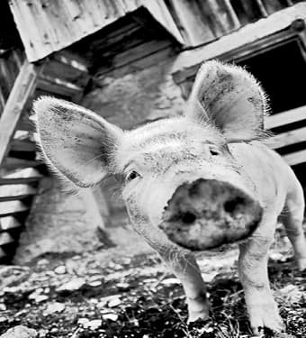

În marea confuzie creată de atacurile simultane ale „statului” „român” împotriva poporului român, nu mai putem observa toate fronturile. Astfel, primele două sau trei „nenorociri” ne epuizează atenția, restul loviturilor strecurându-se pe lângă nervii și sufletele noastre întinse și terfelite deja insuportabil.
Prima pagină este dedicată de câteva luni „crizei financiare, globale, economice, etc” și creează fondul întregii noastre vieți, fond pe care apar toate celelalte. A doua problemă, al doilea subiect de îngrijorare este cel legat de pregătirea înrobirii globale, prin implantarea cipurilor în corpul uman — pașapoartele și actele de identitate cu cipuri nu sunt decât faze de trecere către implantul în corpul uman, care deja se face în unele locuri din lume. Desigur acest lucru de o importanță maximă este trecut pe locul al doilea și probabil se va încerca încă diminuarea importanței lui de către fii marelui architect.. Al treilea subiect — iar de acum; ordinea este cu totul întâmplătoare, după necesitățile zilei — este dezintegrarea învățământului și terfelirea profesorilor care au curajul de a se opune prostituării educației. Apoi - acestea trec de obicei mai puțin observate - stabilirea rupturii definitive între Basarabia și Țară, maltratarea și schingiuirea tinerilor de la Chișinău pentru păcatul de a fi români pe un pământ românesc ocupat, căsătoriile între homosexuali (atât de impuse de uniunea europeană și atât de dorită de unii dintre conducătorii de astăzi ai României), dreptul homosexualilor de a adopta copii și ... gripa porcină. (Împrumutul de la FMI a trecut mai la coada listei).
Așa se face că „știrea” că a apărut un mare pericol pentru întreaga umanitate și că întreg globul pământesc se pregătește să-i facă față, trece oarecum neobservată. Cei care o privesc cu îngrijorare sunt cei care au porci, fiindcă ei își mai aduc aminte de ceea ce s-a întâmplat cu păsările acum trei ani. Cu puțină atenție și cu un efort minim de memorie, putem recunoaște debutul unui „exercițiu” care a mai fost făcut, după cum spuneam acum trei ani. E vorba despre gripa aviară. Așadar să ne amintim de păsări ca să pricepem porcii!
După toată isteria care a avut ca punct de pornire un loc mult îndepărtat din Asia și o localitate corespondentă de la noi — Ceamurlia - și care a avut în centru acel mare pericol pentru omenire denumit gripa aviară, s-a constatat — cam în șoaptă - că nu a existat nici un virus al gripei aviare. Gripa aviară a însemnat distrugerea autonomiei economice individuale - la nivel de gospodărie țărănească - și statale - prin schimbarea pieței de carne de pasăre. La sfârșitul `arderii aproape de tot” a păsărilor din România s-a constat cu stupoare că gripa aviară a plecat așa cum a venit, adică imaginativ - doar că a luat cu ea, și asta nu mai e imaginație, o foarte mare parte din mijloacele de existență ale țăranului român și a „reglat” și problema producției autohtone a cărnii de pasăre.
Să ne mai amintim că întreaga mass-media au manipulat la unison semănând panică - ca în proiectul radiofonic al lui Orson Wells cu marțienii — și desfășurând un program bine stabilit de îngrozire prin crearea imaginii unei lumi în agonie din cauza... găinilor din bătăturile țărănești.
Și încă să ne mai amintim de faptul că s-a creat o instanță unică „medicală” care dicta unde și dacă se mai ascunde virusul aviar, instanță care pur și simplu dicta forțelor de ordine care este următoarea „țintă”, și care își avea centrul la Londra. În acea perioadă Mișcarea Conservatoare, partid de tineret neparlamentar - apărut ca reacție la „politica” practicată în România de astăzi — trimitea un comunicat explicativ pentru acest fenomen. Reproducem întreg comunicatul referitor la gripa aviară, pentru a ne aminti de găini și a putea să înțelegem intențiile porcine.
Ca urmare a soluțiilor falimentare ale autorităților de gestionare a „crizei gripei aviare”, prin proasta administrare a focarelor „confirmate” și a celor suspecte și prin răspândirea alarmantă a acestui virus care în cel mai scurt timp va pune stăpânire pe întreaga țară, provocând prejudicii majore economiei românești;
ca urmare a terorii mediatice la care este supus poporul român, printr-o campanie agresivă de politizare și promovare grețoasă (ne referim inclusiv la programul educațional) a unui subiect neclar care distrage atenția de la adevăratele probleme ale României și care creează confuzie;
ca urmare a măsurilor de violare a proprietății private prin distrugerea gospodăriilor, și prin colectivizarea meschină a păsărilor, nici măcar suspecte, (una din principalele surse de subzistență ale românilor), măsuri care provoacă foamete și frustrare într-un mediu care trăiește din ceea ce produce;
ca urmare a măsurilor de îngrădire a libertății cetățenilor, prin aplicarea nejustificată a carantinei care transformă poporul român într-un popor de cobai, asupra căruia se încearcă o nouă legare de glie, prin limitarea zonei de acțiune și conviețuirea într-o formă modernă de lagăr, plină de bariere (carantină) și focare;
În baza Principiilor Doctrinare Fundamentale ale Mișcării Conservatoare:
Principiul competenței: „Mișcarea Conservatoare consideră competența o condiție esențială pentru accesul la „orice funcție sau demnitate precum și pentru ocuparea oricărui post de specialitate, indiferent de nivel. Competența presupune conduită morală, pregătire profesională și capacitatea de îndeplinire a atribuțiilor specifice”;
Principiul comunitar: „La baza relațiilor din interiorul Mișcării Conservatoare cât și în întreaga societate trebuie să se afle sentimentul solidarității umane, spiritul de comuniune și frățietate, respectul și înțelegerea, acestea găsindu-și justificarea în conștiința participării la un destin comun”;
Principiul unității: „Mișcarea Conservatoare acordă prioritate absolută intereselor generale ale poporului în raport cu eventualele interese partinice proprii”;
Mișcarea Conservatoare consideră că României îi este impus de către UE să joace rolul „bolnavului închipuit” în scopul distrugerii inițiativei autohtone.
Rezolvarea problemei gripei aviare se pare că nu se regăsește pe aceste meleaguri. Prezența acestui virus de proveniență asiatică, transformat cu complicitatea autorităților și a mass-media, într-un veritabil bau-bau, în Romania, o țară săracă, care asemenea unei sugative preia toate problemele mapamondului (înscenările răpirii jurnaliștilor, amenințarea teroristă etc.) este cel puțin suspectă; foarte probabil, avem de-a face cu un virus cu un grad ridicat de selectivitate, mândru și extrem de precis. În drumul său nimicitor, virusul HSN1 ocolește țările vecine, fără perspective de integrare europeană (cu excepția Bulgariei) care nu prezintă simptome de îmbolnăvire, (inclusiv mentală) și care nu transformă acest subiect într-o problemă națională; prezența virusului H5NI1 a redemonstrat incapacitatea României de a gestiona o situație de criză. Soluțiile adoptate de autorități au aspect tragi- comic; asemeni unei piese de teatru, „marea ofensivă”, acest Blietz-krieg anunțat cu surle și trâmbițe s-a dovedit un veritabil fiasco: actorii în costume albe și-au preluat rapid rolul de măscărici, echipați cu „stropitori” care emană apă frumos mirositoare, ciudat de la o sursă putredă, care pute; masacrarea găinilor, acest holocaust al unor păsări simpatice, generatoare de expresii precum „minte de găină” și care stau la originea întrebării fără răspuns „cine a fost primul”, are un singur răspuns și o confirmare. Satisfacerea intereselor Uniunii Europene prin terorizarea populației, colectivizarea păsărilor vii care devin automat suspecte, înfometarea populației prin această desproprietărire și ca rezultat sporirea importului de pui și consumarea numai a celui cu pecetă europeană, de firmă;
tentativele de îngrădire a populației în aceste țarcuri, (sub pretextul carantinei, inclusiv formei autohtone (ușoare), absolut PENIBILE), lagăre moderne indică o gravă batjocură față de populația României. Acest program de proveniență occidentală, aplicat cu supunere de către autorități este un experiment malefic aplicat unui popor necăjit, care joacă mai nou rolul de cobai. Se pare că acesta este rolul nostru în procesul de globalizare;
se pare că România începe să-și schimbe forma de organizare administrativ-teritorială din județe în fo- care de gripă aviară. Dacă într-adevăr există aceste focare, de ce sunt supuse carantinei zonele cu tot cu populație, dacă tocmai acolo se află infecția, iar oamenii pot fi predispuși unui astfel de proces este un lucru deosebit de grav. Păsările, vinovate de transmiterea virusului zboară; barierele autorităților nu. Întreaga strategie de abordare a problemei este falimentară;
la apariția virusului, România din nou a devenit închistată; nu a cooperat cu alte țări care recunosc problema, a pornit o campanie de lichidare a vieții păsărilor autohtone, în timp ce păsările din import primesc Ok-ul autorităților. De ce puiul, care, spre exemplu, umple Mc Donald's-urile din toată țara, ajunge în burțile românilor, numai unii dintre noi cunoaștem;
România face pe victima. Devenim încet un popor de 23 de milioane de suspecți, deși până în prezent nu s-a semnalat nici un caz de infecție la om! Doar cazuri suspecte care infirmă gripa aviară; sperăm să ne mulțumim cu atât, să nu înscenăm decese doar de dragul continuării acestei „afaceri“;
problemele cu adevărat importante ale acestei țări sunt mușamalizate de acest virus apărut de nicăieri, subiect extraordinar pentru presă și prilej de îmbogățire ale unor personaje care probabil exultă la această dramă prin care trec oamenii de rând;
trimiterea de probe la laboratoarele din Londra este lipsiră de orice fundament. Pot foarte ușor să fie trimise probe pozitive care să confirme prezența și gravitatea acestei amenințări.
prezența gripei aviare în România face parte dintr-un plan bine pus la punct de către Uniunea Europeană în complicitate cu autoritățile române și are un scop foarte bine definit. Se poate afirma că gripa aviară este prima fază a colectivizării - pentru animale — de la noi. Foarte probabil, vor urma măsuri împotriva porcilor și a tot ce mai avem, ce se mai produce în acestă țară; devine din ce în ce mai clar că Ro- mânia, ca viitoare membră a Uniunii Europene trebuia să-și schimbe sursele de hrană; ideea că tot ce este autohton nu este bun, este catastrofală, împinge la o creștere a importului, devenind astfel dintr-un stat care se axa pe export în domeniul cărnii, o țară vasală, dependentă de resturile altora;
eforturilor „depuse” de remediere a situației, prezentate populației cu iz lacrimogen au fost dezastruoase. Prin măsurile aplicate s-a ajuns a extinderea ariei de acțiune a virusului; astfel autoritățile trebuie să își asume întreaga responsabilitate;
confiscarea și măcelărirea păsărilor au dus automat sărăcie și foamete. Reamintim că traiul în mediul rural se bazează tocmai pe ceea ce se produce, ce se crește. Acești oameni nu doresc și nici au posibilitatea să consume euro-puiul dumneavoastră!
prin impunerea carantinei, oamenii au devenit izolați. Există situații în care nu s-au putut deplasa la locul de muncă. Omul este născut liber, nu ține de natura sa să fie îngrădit, asemeni unor vite „în cercul vostru strâmt!” păstrarea populației în presupusele focare este un act criminal, fapt de care autoritățile au ținut cont destul de târziu. Carantina ușoară este o invenție tipic balcanică, provenită din inventivitatea unor indivizi, tipică cei drept acestui popor;
România, prin precizia serviciilor secrete trebuia să cunoască dacă va fi victima unei eventuale agresiuni din partea virusului aviar. Precum în cazul inundațiilor nu s-a luat absolut nici o măsură concretă de prevenite; s-a stat cu brațele încrucișate și s-a așteptat această patimă cate nu este nici pe departe o simplă răceală de primăvară! În România nu s-a confirmat nici un caz de gripă aviară la om, asta nu datorită măsurilor autorităților, ci pur și simplu că acest virus nu este ce se vrea de fapt. Reprezintă doar un mediu propice de îmbogățire a unor parveniți și de satisfacerea unor interese externe. Nu ar mira pe nimeni daca în România s-ar înscena moartea unor indivizi „căzuți în ghiarele gripei aviare”. Avem stofă de actor și am demonstrat, E suficient!
Fără îndoială, subiectul gripei aviare a prins. Astfel, gravele probleme cu care ne confruntăm la toate nivelurile au fost aruncate într-o lumină chioară. Ne lăsăm orbiți de un subiect care arde retina, dar care asemenea luminii de bec, nu încălzește. Gripa aviară are aspect efemer într-o comparație cu situația reală a țării; asistăm neputincioși la un nou joc de interese, prin care se confirmă faptul că trăim într-o Românie, care după modelul Europei, devine bolnavă!
Scris de Biroul de Presă al Mișcării Conservatoare
Miercuri, 24 Mai 2006, 20:00
Astăzi gripa aviară este înlocuită cu gripa porcină. Am reprodus comunicatul Mișcării Conservatoare pentru că suntem exact în aceeași situație doar că nu mai este vorba despre păsări — iar virusul va purta cu siguranță un alt nume - ci despre porci. „Pornirea” gripei porcine este aceiași cu a gripei aviare - undeva departe, în îndepărtata Asie a apărut și a ucis și poate... chiar a devenit un pericol pentru umanitate!
Dar mai bine pentru mine ar fi să mă fac prooroc și să vă spun ce se va întâmpla mai departe cu această „în grozitoare, nemaiîntâlnită, feroce și ucigătoare” boală.
(Aici încep viziunile porcine).
În scut timp știrile despre evoluția frontului gripei porcine, se vor înmulți în așa măsură încât criza financiară globală, împrumutul la FMI - absolut criminal pentru viitorul României - implantarea cipurilor și transformarea noastră în animale, căsătoriile homosexualilor, distrugerea învățământului, problema Basarabiei - toate acestea și încă altele pe care din motive de spațiu nu le mai numim, vor trece pe planul al doilea. Se vor estompa.
Vinovată de tot răul din univers și mai ales pentru starea țării va deveni, pentru toată lumea, gripa porcină.. Se va crea (dacă nu s-a întâmplat acest lucru deja) o instanță o instanță medicală unică (probabil tot la Londra), ultra specializată în virusul porcilor, la care toată lumea va asculta cu teamă.
Va apărea - după o perioadă în care ne vom fi îngrozit cu toții de „ravagiile” criminale ale acestui virus demn de a face parte din grupările teroriste ale lui Ben Laden — va apărea deci, și în țara noastră, în sfârșit, mult temutul virus porcin.

Ei bine, atunci bravul nostrum Minister al Administrației și Internelor, împreună cu performanta armată a României — care face cu cinste parte din NATO - vor acționa direct: vor urmări, vor depista, vor imobiliza și vor „arde aproape de tot” dușmanul cel rău și ticălos, acest pericol continuu pentru umanitate: porcul din cotețul țăranului român. Desigur, la această vastă și importantă desfășurare de forțe vor participa și alte ministere — de sănătate, de justiție, etc — și, de ce nu, întreaga țară, sub privirile îngrijorate ale conducătorului Traian Băsescu. Dar pe luptători nu îi va părăsi nădejdea și speranța în victorie. Și aceasta este justificat, fiindcă celălalt război — cel cu găinile — a fost încununat de victorii.. Firește, acum dușmanul este ceva mai mare ( cam pe la 100-150 de kilograme în viu) și, trebuie spus răspicat: porcu nu e ca găina. Cu siguranță se vor evidenția cei mai bravi dintre ei. Luptele care se vor da vor fi de-a dreptul crude și sângeroase. Dar toate acestea, spre salvarea poporului roman și — de ce să ne ferim de cuvinte mari? — spre izbăvirea întregii omeniri. Țara va mirosi a ignat iar noi vom fi martori — participanți — la scrierea unei noi pagini de istorie.
(Aici se încheie viziunile porcine)
După ce se va fi terminat această delirantă pagină din viața unui popor care nici nu știe ce i se întâmplă, pagină care ne va costa încă o parte din noi — încă o dată țăranii vor fi loviți, producția de carne porcină va dispărea cu totul din România, porcul european îi va lua locul - lucrurile vor reveni la „anormalul” de mai înainte. Urmează vacile, boii și mai apoi... noi.
Întrebarea care se pune este una singură: ce se poate face în această situație?
Ar trebui să ne opunem, în orice mod, tuturor măsurilor care vor fi luate în legătură cu acest nou tip de naționalizare. At trebui să înțelegem odată pentru totdeauna că nici un străin niciodată nu ne va face treaba noastră și nu va fi preocupat de binele nostru. Dacă noi nu facem ceea ce trebuie să facem, pentru noi și pentru țară, atunci nimeni nu va face. Cei din afară nu ne vor binele, ci ne vor avutul și, mai mult decât atât: ne vor chiar pământul. Ar trebui să vedem și să luăm atitudine. Ar trebui să înțelegem că ceea ce a fost scris pentru noi — credința în Hristos — este ceea ce trebuie să urmăm. Nu există, nu a existat și, cu siguranță nici nu va exista vreodată vreo uniune — oricum s-ar numi ea: sovietică sau europeană — care să aibă ca preocupare mântuirea noastră. Oare, cât de lipsiți de minte și de responsabilitate trebuie să fim să nu înțelegem toate aceste lucruri și să ne înregimentăm, să cooperăm, să devenim complici la uciderea propriului nostru popor, la distrugerea credinței noastre?